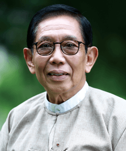

Professor Dr. Aung Tun Thet got his Bachelor of Commerce degree from Rangoon University, Myanmar, in 1965 and postgrad diploma in Management Studies from Brighton University in England, in 1972.
• A year after that in 1973, he again earned his Master of Science degree in Operations Research from the University of Warwick, England. In 1977, he finished his Ph.D Degree in Management Sciences from the University of Manchester, Institute of Science and Technology (UMIST) also in England.
• He was a post-doctoral research fellow at the University of Marburg, Germany, from 1986-1988.
• In 2014, he was awarded Honorary Professor of British Columbia University in Canada. • He was later awarded Doctor of Letters (Honoris Causa) from Yangon University of Economics, Myanmar, in 2005 as well.
• He is a visiting professor at Yangon University and Yangon University of Economics.
• He is a visiting Professor of Payap University.
• He is a member of board of directors in UNESCO-India Mahatama Gandhi Institute of Education for Peace and Sustainable Development and the Chair of UN Global Compact Network Myanmar.
• He is an advisor of Union of Myanmar Federation of Chamber of Commerce & Industry (UMFCCI) and also a member of Myanmar Investment Commission (MIC).